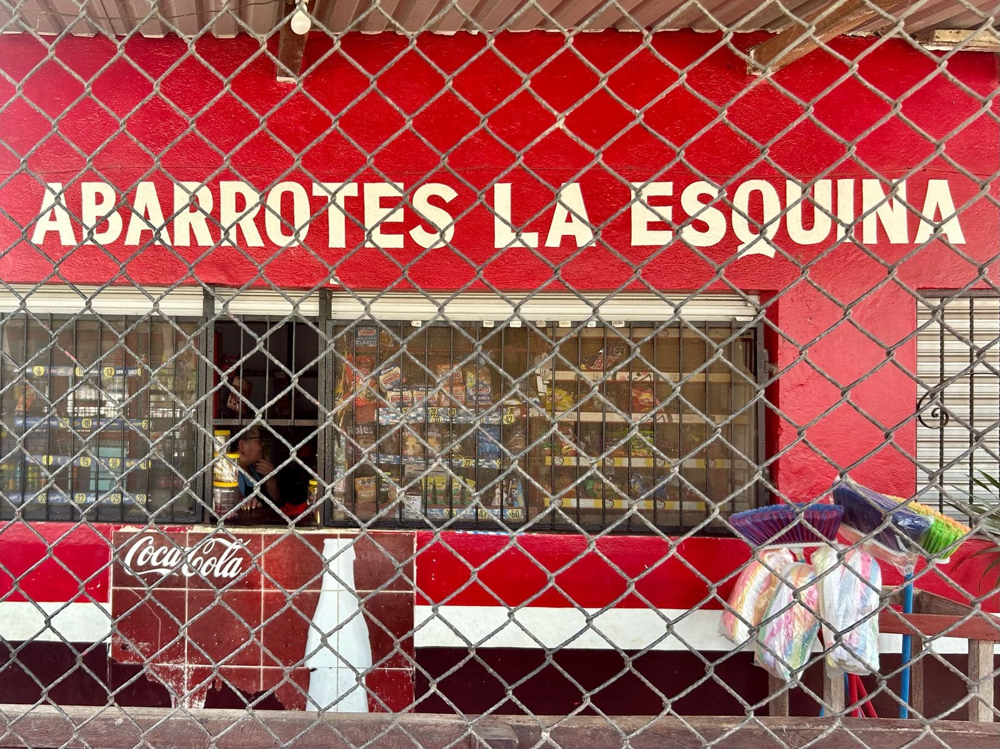
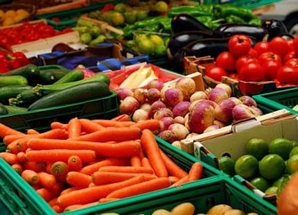
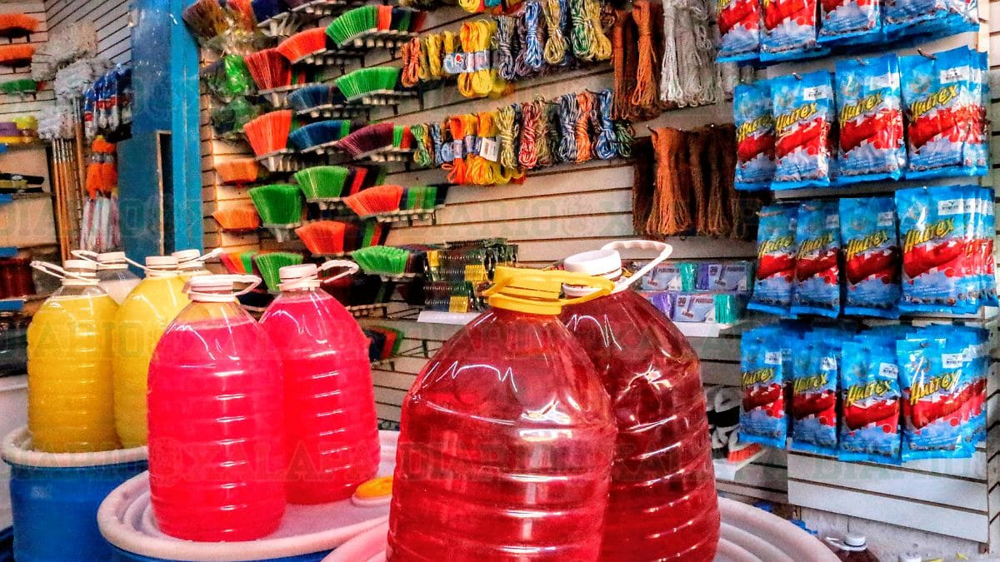
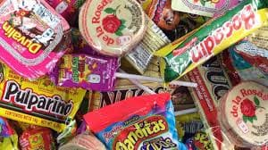

Tu tienda de confianza en la esquina

Somos una tienda de conveniencia local ubicada estratégicamente en la colonia, ofreciendo productos de primera necesidad con calidad y atención personalizada.
Abarrotes básicos, encuentra todo lo que necesites para tu despensa diaria.

Frutas, verduras y alimentos frescos para tu hogar.

Todo lo necesario para mantener tu espacio limpio y ordenado.

Refrescos, agua y bebidas energéticas, etc. Perfectos para disfrutar en cualquier momento.
Dirección: Prolongación Marco Antonio Muñoz, Zona Urbana Ejidal.
Teléfono: 288 119 4354